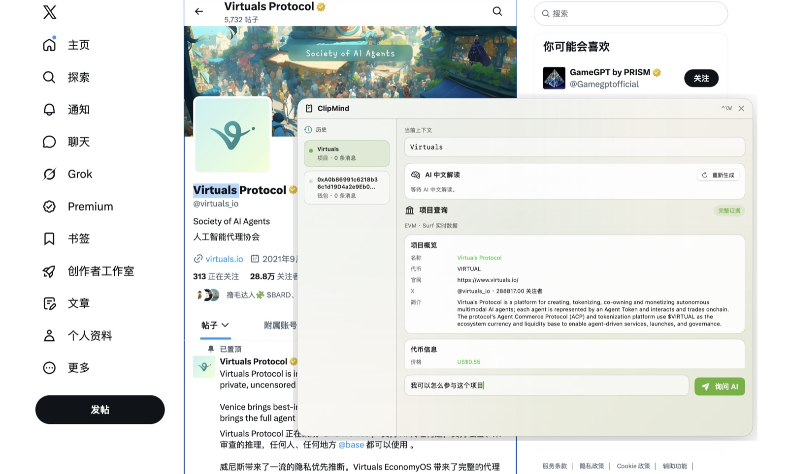
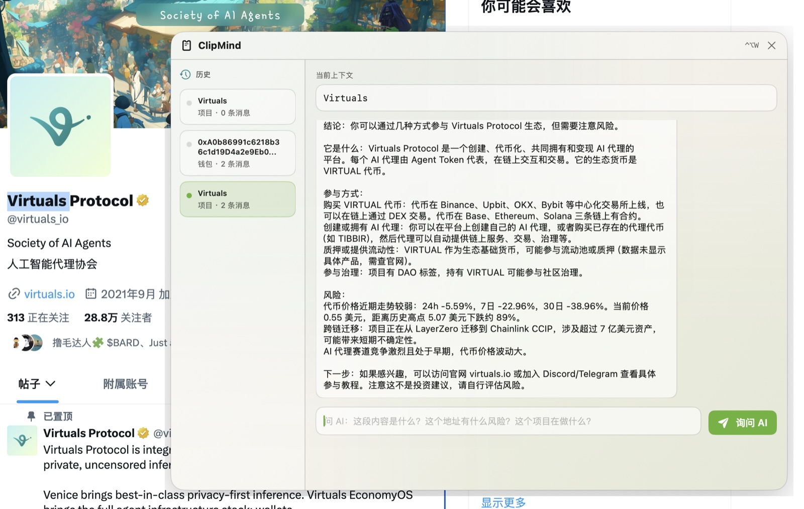
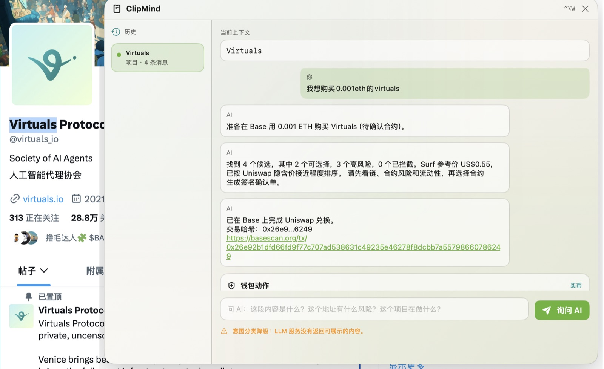
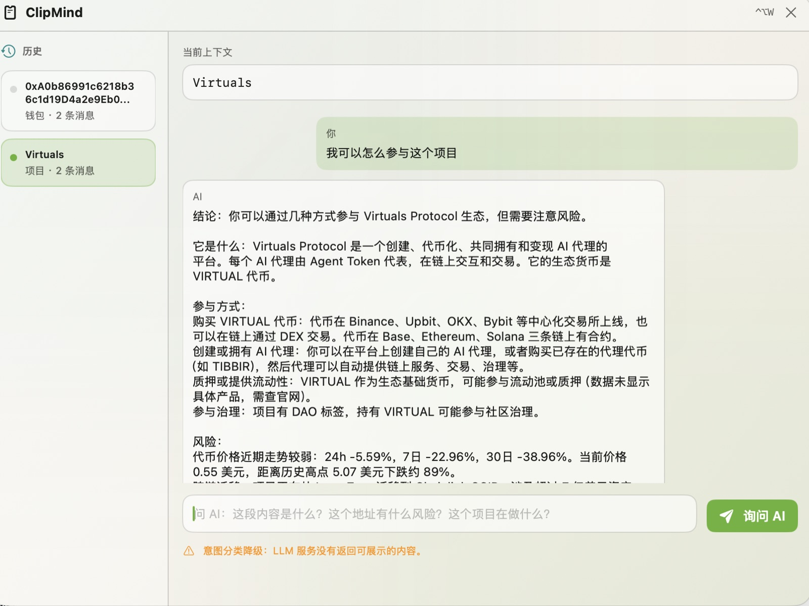
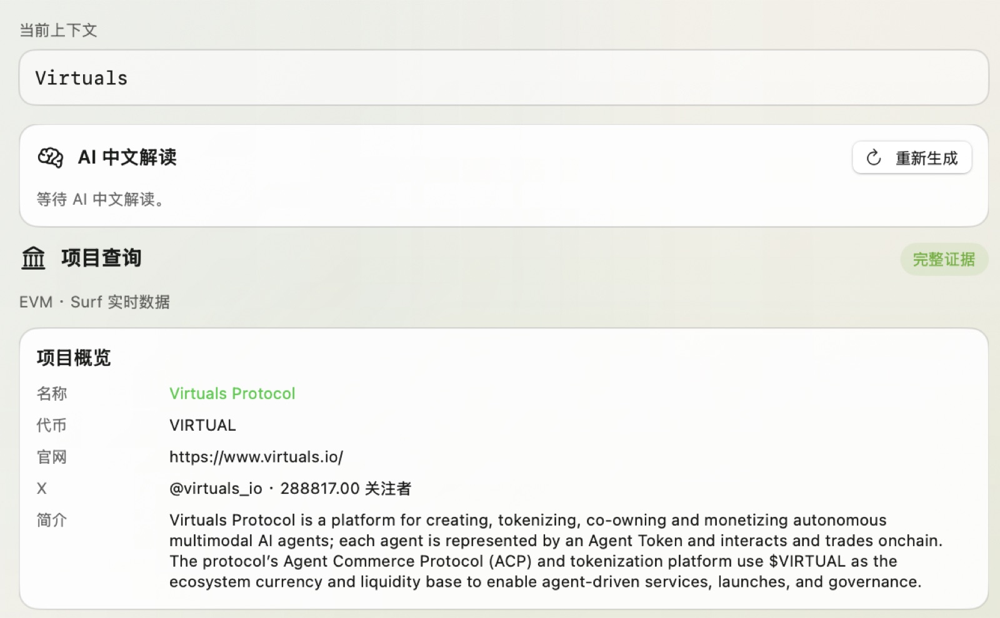
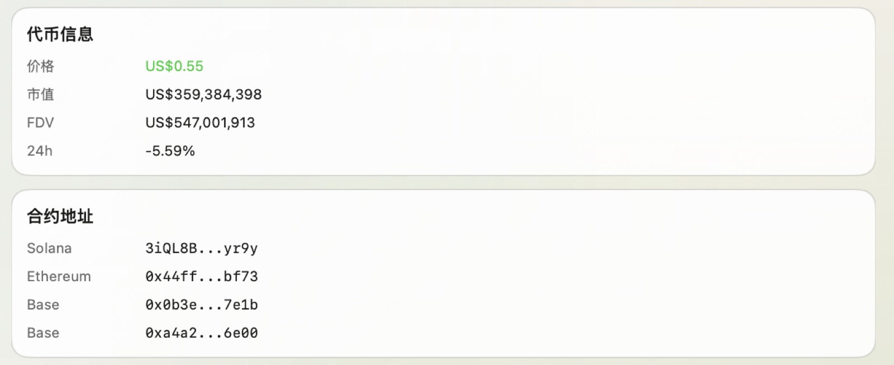
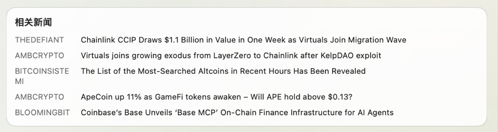
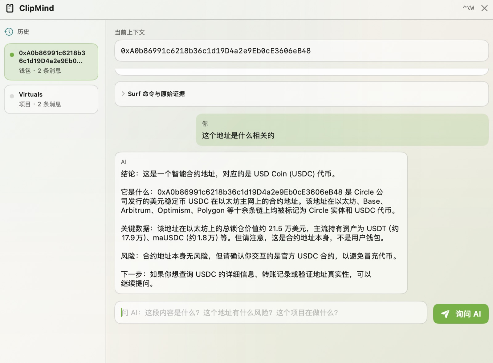
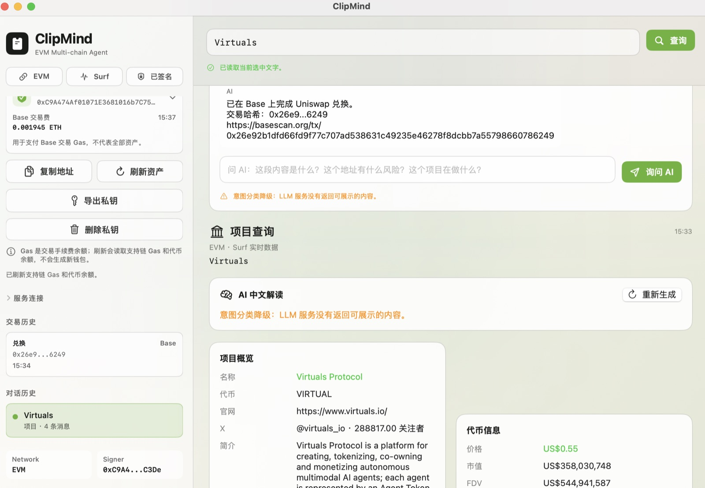

项目快速投研
解释项目定位、生态参与方式、近期动态和主要风险。

朋友发来项目、代币或地址时，直接在当前页面高亮。
快捷键打开悬浮窗，保留原页面上下文。
结合 Surf、链上数据、新闻和合约信息给出结论。
买币或转账前展示确认单，由用户本地签名。
What It Does
ClipMind 像一个随时可唤醒的区块链 AI 助手。用户选中页面上的任意项目名、代币名、合约地址或钱包地址，就能直接提问、查证并继续执行。
解释项目定位、生态参与方式、近期动态和主要风险。
查询价格、市值、合约候选、流动性和链上基础信息。
识别合约地址、标记风险信号，并提示用户确认交互对象。
AI 准备购买路径和交易确认单，用户确认后本地签名。
选中收款地址即可生成转账确认，执行前展示金额、链和地址。
围绕当前选中文本持续追问，不需要在多个应用之间来回切换。
Real Product Scenarios
ClipMind 不是又一个单独打开的工具，它接管的是用户最容易中断的那一步：从“看到一段信息”到“理解并决定是否行动”。

以前需要退出聊天或 X，打开浏览器搜索，再去多个来源拼信息。现在只要选中项目名称，ClipMind 就能在悬浮窗里完成快速投研、查实时数据、整理参与方式和风险。

选中代币名称或合约地址后，AI 先解释它是什么、有哪些合约候选和风险，再生成交易确认。用户点击签名后，本地钱包完成代币交易或转账。
Product Modules
这些模块共同形成一个完整闭环：上下文捕获、AI 解释、证据验证、安全判断、钱包执行。
用户不用切换应用。ClipMind 读取当前选中文本，将它变成一段可追问的上下文，对项目、代币、合约和地址都能持续对话。

项目概览、代币价格、市值、合约地址和相关新闻被拆开呈现，用户可以看到 AI 为什么得出这个判断。



当用户选中合约或钱包地址时，ClipMind 会识别实体、链、资产和风险提示，避免把合约地址误当成收款地址。

ClipMind 不只是把问题发给 AI。它会结合选中文本、用户输入、链上对象和钱包状态，判断用户是在问项目、查代币、做合约安全检测，还是准备买币或转账；低置信度时先降级为解释和澄清，不直接进入交易。

Before and After
From AI to Web3 AI
普通 AI 只回答自然语言。ClipMind 会先把用户选中的 Web3 对象和问题转成结构化意图，再决定是调研、检测、交易、转账，还是继续追问。
把项目名、代币、合约地址、钱包地址或交易哈希作为当前上下文，避免用户重新复制粘贴。
先判断选中内容是什么：项目、代币、合约、钱包地址或交易，再决定需要调用哪类数据。
结合“选中的是什么”和“用户怎么问”，分类为项目投研、代币研究、安全检测、买入、转账或普通追问。
如果是买币或转账，继续补齐链、金额、地址、报价和风险提示；缺少关键参数时先澄清。
Technical Implementation
ClipMind 的技术栈围绕“先理解，再查证，最后确认执行”组织，让 AI 对话和钱包动作在同一个上下文里衔接。
通过 Surf 提供的 skill 实现项目、代币、地址、链上数据和新闻信息查询。
接入 Uniswap API 获取交易路径和报价，用于生成代币交易确认流程。
接入 DeepSeek V4 API，负责全局对话、意图理解、中文解释和执行前确认。
Signing Boundary
钱包能力围绕一个清晰边界设计：AI 负责理解、候选、解释、报价、风险提示和生成确认单，最终签名必须由用户触发。
私钥保留在本机，交易签名发生在用户确认之后。
购买前先展示项目、价格、合约候选、风险和链信息。
交易完成后保留哈希、链、时间和对应对话。